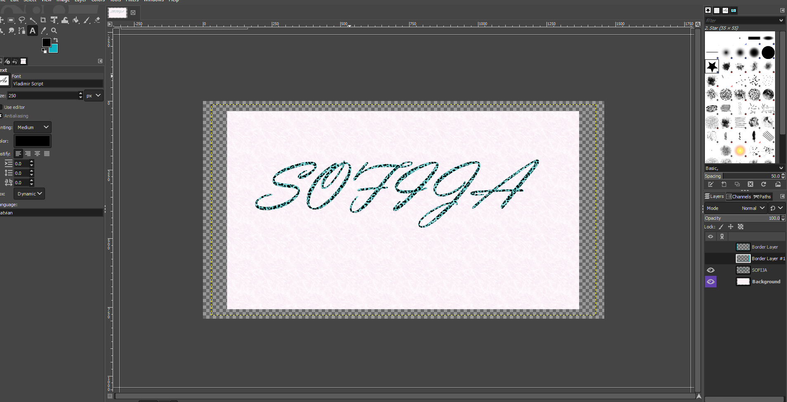

DATORGRAFIKA
Datorgrafika ir datorzinātnes apakšnozare, kas nodarbojās ar vizuālās informācijas apstrādi un attēlošanu dažādās ierīcēs. Datorgrafiku var raksturot arī kā vizualizāciju jeb attēla veidošanas procesu.


Datorgrafika ir datorzinātnes apakšnozare, kas nodarbojās ar vizuālās informācijas apstrādi un attēlošanu dažādās ierīcēs. Datorgrafiku var raksturot arī kā vizualizāciju jeb attēla veidošanas procesu.
Šajā projektā mēs grupās izmantojām Tinkercad programmu, lai izveidotu logotipu mūsu izdomātajam uzņēmumam. Mācījāmies strādāt ar 3D dizainu, izmantojot dažādus veidošanas rīkus un iespējas, lai radītu unikālu un profesionālu logotipu, kas atspoguļo mūsu uzņēmuma identitāti. Pēc logotipa izveides mēs to pārvērtām 3D modelī un sagatavojām drukāšanai, izmantojot 3D printeri. Tas ļāva mums iegūt fizisku logotipa prototipu, kas papildināja mūsu izpratni par 3D drukāšanas procesu un palīdzēja attīstīt praktiskās iemaņas šajā tehnoloģijā.
Mēs strādājām ar Microsoft Word, apgūstot pamata zināšanas un prasmes, kas ir būtiskas dokumentu veidošanā un rediģēšanā. Mācījāmies izmantot dažādus teksta formatēšanas rīkus, piemēram, fontu un lielumu izmaiņas, teksta izkārtojumu, rindu atstarpes un sagrupēšanas iespējas. Tika veikta arī tabulu, attēlu un diagrammu ievietošana dokumentos, kā arī pielāgoti stili un veidnes. Šī prakse palīdzēja pilnveidot mūsu spējas efektīvi un profesionāli izstrādāt dokumentus, kas nepieciešami gan mācībām, gan profesionālajai darbībai.

Šajā portfolio ietvaros mēs strādājām ar Microsoft Excel, apgūstot dažādas funkcijas un formulas, kas palīdz efektīvi apstrādāt un analizēt datus. Mācījāmies izmantot pamata un uzlabotas formulas, piemēram, SUM, AVERAGE, IF un citas, lai veiktu aprēķinus un analizētu informāciju. Turklāt, izmantojot dažādus treniņuzdevumus, mēs pilnveidojām prasmes darbā ar datu tabulām, filtrēšanu, kā arī grafiku un diagrammu veidošanu, lai vizualizētu rezultātus. Šī pieredze palīdzēja izprast Excel jaudu un pielietojumu reālās dzīves uzdevumos un nodrošināja nepieciešamās prasmes datu analīzē un prezentēšanā.